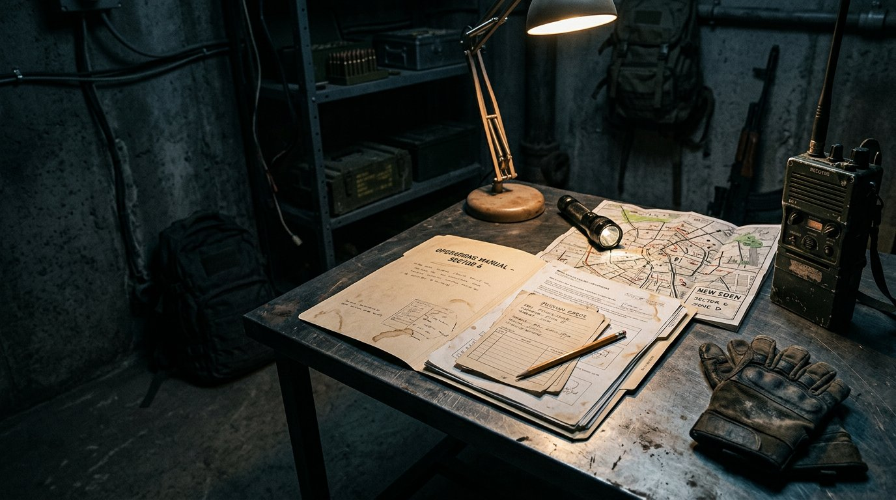

OUTIL / PRÉREQUIS
Une carte de liens connus, pas un déverrouillage garanti
Chaque lien vient de taskRequirements. Plusieurs exigences ne prouvent pas qu’elles sont toutes simultanées : l’opérateur ET/OU n’est pas inféré.
Les cases sont locales à ce navigateur; elles ne mettent pas à jour votre compte.

01 Explorateur
Choisir une tâche et remonter ses prérequis
Le panneau affiche les liens directs et les conditions de trader exportées.
Collectionneur
Prérequis directement listés par Tarkov.dev; la logique ET/OU n’est pas déduite.
- Shooter Born in Heaven · statut exporté complete
- Sew it Good - Part 2 · statut exporté complete
- Pat le coursier - Partie 2 · statut exporté complete
- Chimie - Partie 3 · statut exporté complete
- Le tireur de Tarkov - Partie 4 · statut exporté complete
02 Progression
Cases locales et conditions réelles
Les tâches cochées sont stockées par mode et n’envoient aucune donnée à un serveur.
Depuis 1.1.0, la plupart des tâches secondaires sont distribuées par paliers de loyauté en petits groupes; les chaînes et conditions d’événement subsistent. Le graphe exporté n’est pas le journal du jeu.
REF Sources
Sources et limites
BSG, exports communautaires et outils restent distingués. Référence 2026-11-18; prix, disponibilité de quête, spawns et progression de compte non testés dans le client.
- primairePatch 1.1.0.0 · notes BSG 3 août 2026 : refonte des tâches par loyauté, retrait du volume d’achat, changement de services, règles Seasonal et synchronisation Arena → PvP Seasonal.
- donnees_communautairesTarkov.dev · catalogue des endpoints Documente les exports JSON publics et les modes regular, pve et pvp-season. Source communautaire, pas une API officielle BSG.
- donnees_communautairesTarkov.dev · tâches Tâches, prérequis et balises Kappa affichés par Tarkov.dev; l’export interrogé ne comprend pas toutes les tâches signalées.
- communauteGitHub · issue #886 sur les tâches absentes Issue ouverte à la vérification : Getting Acquainted et huit tâches Make Amends signalés absents. Les neuf IDs restent absents des trois réponses tasks interrogées; cela ne prouve pas l’état dans le client.
À lire ensuite
Continuer dans Quêtes
Ouvrir une autre fiche et garder le même mode de référence.